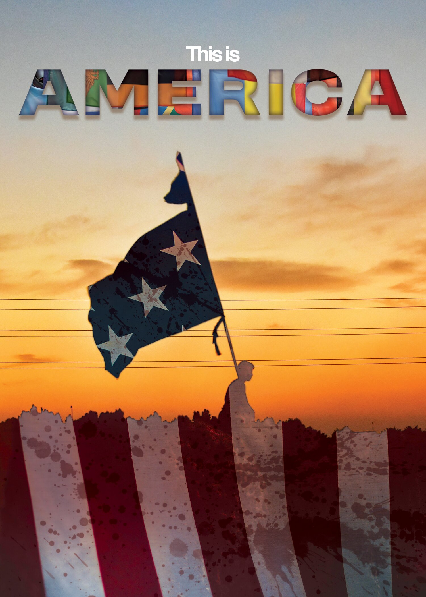

This montage was created using four photos found online. I ensured all photos were free and available to
use, as I did not want to steal directly from random websites. My motivation for this montage was to
dive deep into the political issues of our country, and I wanted to create a piece that would be visually
impactful.
I started by placing the photos in different layers in Photoshop. I used the Magic Wand tool to select
certain area of the photo, and created a layer mask to remove the subject from the background. With the
mask, I feathered the edges a bit to make the subject more seamlessly blend altogether. I also used the
Transform tool to resize the photos and make them fit together better. The text in the montage was also
created using a layer mask, where I used the Text tool to type out the words and then created a mask. I
added another photo of flags in the background of the text layer, and used the clipping mask function to
make the photo only appear. I also adjusted the brightness and contrast of the photos to make them more visually appealing